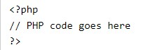

What is PHP?
PHP is an acronym for "PHP: Hypertext Preprocessor"
PHP is a widely-used, open source scripting language
PHP scripts are executed on the server
PHP is free to download and use
What is a PHP File?
PHP files can contain text, HTML, CSS, JavaScript, and PHP code
PHP code is executed on the server, and the result is returned to the browser as plain HTML
PHP files have extension ".php"
What Can PHP Do?
PHP can generate dynamic page content
PHP can create, open, read, write, delete, and close files on the server
PHP can collect form data
PHP can send and receive cookies
PHP can add, delete, modify data in your database
PHP can be used to control user-access
PHP can encrypt data
With PHP you are not limited to output HTML. You can output images, PDF files, and even Flash movies.
You can also output any text, such as XHTML and XML.
Why PHP?
PHP runs on various platforms (Windows, Linux, Unix, Mac OS X, etc.)
PHP is compatible with almost all servers used today (Apache, IIS, etc.)
PHP supports a wide range of databases
PHP is free. Download it from the official PHP resource: www.php.net
PHP is easy to learn and runs efficiently on the server side
A PHP script is executed on the server, and the plain HTML result is sent back to the browser.
Basic PHP Syntax
A PHP script can be placed anywhere in the document.
A PHP script starts with :
